结语
把二十一个模式收拢为五层架构视图，给出典型场景的模式组合速查表、从原型到生产的五级成熟度阶梯，以及评估、安全、成本、标准化四个开放问题。
22.1 二十一个模式，一张架构视图
把全书二十一个模式按"在系统架构中回答什么问题"重新归位，可以得到一张五层视图。这张图不是目录的复读——部分划分（第 1 至 21 章的四部分）面向学习顺序，这一节面向设计时的查阅顺序：当你站在一个新系统面前，从上往下过这五层，每一层问自己"这个层面的问题我解决了吗"。
| 层 | 模式（章号） | 这一层回答的问题 |
|---|---|---|
| 编排层 | 提示链(1)、路由(2)、并行化(3)、反思(4)、工具使用(5)、规划(6)、多智能体(7) | 任务的控制流怎么搭：拆解、分流、并发、自我检查、动用外部能力、展开计划、分工协作 |
| 认知层 | 记忆管理(8)、学习与适应(9) | 系统怎么"记得住"与"变得更好"：有限上下文内的状态留存与取用，从历史交互中持续改进 |
| 集成层 | MCP(10)、知识检索 RAG(14)、智能体间通信 A2A(15) | 系统怎么与外部世界对接：工具与数据源的标准化接入、私有知识进入上下文、智能体之间的互操作 |
| 保障层 | 目标设定与监控(11)、异常处理与恢复(12)、人在回路(13)、守护栏与安全模式(18)、评估与监控(19) | 系统怎么"不出事、不跑偏、可信赖"：目标锚定、失败恢复、人类把关、行为边界、质量度量 |
| 效率层 | 资源感知优化(16)、推理技术(17)、优先级排序(20)、探索与发现(21) | 系统怎么"花得值、想得深、排得对、找得到新解"：成本延迟纳入决策、按需分配思考、任务定序、主动发现 |
五层之间有明确的依赖方向。编排层是地基：控制流没搭对，其余一切无从谈起——这也是全书用整整一章篇幅先讲提示链这个"最笨"模式的原因。认知层与集成层是扩容：它们不改变控制流的形状，而是决定控制流两端接什么（接多少历史、接哪些外部系统、接哪些同伴）。保障层是准入：一个系统只有通过了目标锚定、失败恢复、人类闸门、行为边界与评估度量五道检查，才有资格进入真实业务；保障层各模式与编排层是横切关系——监控与守护栏长在控制流的每一步上，而不是系统的某个部件。效率层是精修：在系统正确、稳定之后，才有资格谈成本、延迟与调度优化；顺序反过来就是过早优化。
读这张图还有第二种方式：它是故障诊断的定位表。系统答非所问，先查编排层（拆解与路由对不对）；系统"金鱼记忆"，查认知层；系统接不上企业数据，查集成层；系统跑偏、崩溃、越权，查保障层；系统太贵太慢太乱，查效率层。多数生产事故是跨层的——比如一次质量回归（保障层）的根因是上下文溢出（认知层）导致的提示截断（编排层）——这张图帮你在排查时先定位层面，再进入具体模式。
22.2 场景到模式组合：速查表
模式的价值在组合中兑现。下表给出八类典型场景的主干组合——"主干"指第一次搭建就该就位的模式，而非穷尽清单；每行的最后一列是实践中最容易踩的坑。
| 场景 | 主干模式组合 | 关键提醒 |
|---|---|---|
| 智能客服 | 路由(2)+提示链(1)+RAG(14)+记忆(8)+守护栏(18)+评估(19) | 降级转人工是合法出口，不是失败 |
| 深度研究 | 规划(6)+工具使用(5)+并行化(3)+探索(21)+评估(19)+人在回路(13) | 每个结论都要可溯源，引用可核验是底线 |
| 编码智能体 | 规划(6)+工具使用(5)+反思(4)+异常恢复(12)+评估(19) | 判据是测试通过，且不许改测试文件 |
| 数据分析 | 提示链(1)+工具使用(5)+反思(4)+记忆(8)+资源感知(16) | 先用便宜模型探索式跑通，再谈精确分析 |
| 知识库问答 | RAG(14)+路由(2)+守护栏(18)+评估(19) | 忠实度一票否决，宁答"不知道"不编造 |
| 自动化运维 | 目标监控(11)+异常恢复(12)+优先级(20)+工具使用(5)+人在回路(13) | 写操作的闸门永远在人手里 |
| 内容生产 | 提示链(1)+并行化(3)+反思(4)+路由(2)+评估(19) | 多路生成再评审择优，好过单路硬改 |
| 多部门协作 | 多智能体(7)+A2A(15)+优先级(20)+目标监控(11)+守护栏(18) | 交接处是故障高发区，通信契约要显式 |
组合有一条通读原则：从保障层借模式的时机宜早不宜迟。实践反复证明，"先上线再补监控""先跑通再加守护栏"的欠账，补起来的成本是初次设计的数倍，而且往往是在一次事故之后被迫补的。另一个原则是组合从简：先用最少的模式达到可用，让真实流量暴露问题，再引入下一个模式——每引入一个模式都在增加系统的维护面，这个成本必须由真实的问题来证明其正当性。

22.3 从原型到生产：五级成熟度阶梯
把一个智能体 demo 变成生产系统，中间要爬一道阶梯。五级划分的依据是：每一级回答一个此前可以回避的问题。
第一级：能演示（happy path 可跑）。单一提示词、单轮调用、手工触发。这一级的产出是可行性判断，它的全部价值就是被推翻或确认——不要在此恋战打磨提示词，因为脱离真实输入分布的打磨大概率白费。
第二级：能复现（评估进入）。黄金集建立、评估流水线跑通（第 19 章）、每次改动有分数可比。这一级标志团队从"改了感觉好"进入"改了分数好"。多数团队低估这一级的难度：判据设计、裁判消偏、黄金集建设都是实打实的工程，但它是后面所有级别的地基。
第三级：能扛错（失败被设计）。错误分类、重试熔断、降级、检查点恢复（第 12 章）就位，目标监控锚定长任务（第 11 章），危险动作有守护栏（第 18 章）与人工闸门（第 13 章）。这一级的验收标准不是"不出错"——出错不可避免——而是出错的剧本存在且演练过。
第四级：能经营（成本与调度被管理）。资源感知路由（第 16 章）、优先级排序与预算降级（第 20 章）、在线监控三件套与告警（第 19 章）就位。系统有了预算账户、有了降级率与延迟分位的看板、有了"资源不够时牺牲什么"的显式决策。到了这一级，智能体系统才第一次可以被当作一项可持续运营的服务，而非一个不断冒烟的项目。
第五级：能进化（系统随时间变好）。学习与适应闭环（第 9 章）与探索机制（第 21 章）运转，在线坏案例自动回流黄金集，提示词与策略在评估门禁的保护下持续进化，多智能体协作的效率有度量和优化。这一级的标志是一个反直觉的现象：团队敢于让系统改自己，因为每一处改动都被门禁看住。
阶梯的读法是"不可跳级、逐级驻留"。跳过第二级直奔第四级（很多团队的热切愿望）等于在没有度量的情况下做成本优化——你不知道省下的钱有没有以质量为代价。每一级驻留时间的长短因场景而异，但顺序几乎不可交换。
22.4 开放问题与展望
本书收尾于四个尚无定论的问题。它们不是本书的遗憾，而是这个领域当下最真实的形状——读者接下来一到三年的工程实践，大概率就发生在这四条战线上。
评估滞后于能力。模型能力的扩散速度（新版本几周内铺开）远快于评估体系的建设速度（黄金集与判据以月计），结果是每次能力跃迁后都有一段"没有尺子的时期"：旧基准饱和失效（MMLU 类考卷被普遍背题后区分度归零），新基准的公信力需要时间建立。对工程团队的直接含义是：公开榜单只能当参考，自建黄金集是唯一可以信赖的比较基准，而它必须随业务演化持续保鲜。LLM-as-judge 缓解了判据生产的瓶颈，但裁判的偏差管理、对抗样本的军备升级，都还是进行中的战斗。
安全军备竞赛。守护栏（第 18 章）面对的是一场没有终点的对抗：提示注入的手法随模型能力同步进化，多智能体系统把攻击面从单个模型扩展到通信链路（第 15 章），The AI Scientist 的自动评审被注入事件（第 21 章，arXiv:2408.06292）预示了"探索与自主性越强、被操纵的杠杆越多"。当前工程界的基本盘仍是纵深防御——输入过滤、行为约束、权限最小化、人类闸门层层设防——但防御方天然处于滞后位置。本书能给的原则只有一条：把安全当作与功能同级的持续工程，而不是一次性的合规检查。
成本曲线。推理成本在单位能力维度上持续下降，但智能体系统的总成本曲线未必下降——因为能力的解锁会引来更长链路、更多轮次、更大规模的任务。第 16 章与第 20 章的机制（按任务定价、预算降级）是当下的答案，但更深的问题尚未收敛：什么时候值得让 agent 多想一步（第 17 章）、多验证一遍（第 19 章）、多探索一轮（第 21 章）？这些"思考的经济学"问题，本质上是把经典的最优停止与决策理论放到一个成本结构仍在剧烈变化的平台上。
多智能体标准化。A2A（第 15 章）与 MCP（第 10 章）分别从智能体互联与工具接入两个方向推进互操作标准，生态正在快速聚拢，但尚未尘埃落定：智能体的能力描述、信任传递、计费结算、故障责任划分都还没有跨厂商的共识。对采用者的建议是务实的：按标准的形状设计自己的接口（属性命名跟随语义约定、能力声明可机读），但把核心业务逻辑留在标准覆盖不到的地方——标准是护城河上的桥，不是护城河本身。
22.5 结语
二十一个模式讲完，值得回望全书真正反复出现的那几条线索。第一条：老智慧，新容器。拓扑排序来自 1962 年（Kahn, CACM），EDF 来自 1973 年（Liu & Layland, JACM），熔断器来自微服务时代，猜想与反驳来自 1934 年——智能体工程几乎没有发明新的底层原理，它做的事情是把人类在实时系统、分布式事务、科学方法论上的积累，重新组装进"语言模型步进执行"这个新运行时，并为语义故障、不可重放输出、自然语言判据这些新问题补上对应的新件。这意味着这门学科的半壁江山是现成的：当你在 agent 场景遇到一个调度、容错或验证问题时，先去找那个领域的经典答案，通常都在。
第二条：判据先于行动。从提示链每一步的出口检查，到反思的评分标准，到目标监控的完成判据，到评估的黄金集，到探索的验证闸门——全书二十一章里，几乎每个模式的核心难点都是同一个："好"由谁、按什么标准、在什么时机说了算。判据可信，模式才有用；判据被生成方污染或自任裁判，一切机制都沦为表演。这条线索值得写进每个智能体团队的章程。
第三条：自治的边界是授权的函数。智能体的自主性不是属性，是配置——人类闸门放在哪一步、预算给多少、失败时允许它自作主张到什么程度，这些配置决定了系统是助理还是风险源。好的智能体工程师与好的管理者做的是同一件事：把授权写成显式的、可审计的、可撤销的机制，而不是凭感觉放手。
智能体技术仍在一个快速漂移的斜坡上，今天的具体做法三年后多半会过时；但这三条线索——站在老学科的肩膀上、把判据当第一等公民、把自治当作需要审慎配置的授权——大概率会一直成立。愿这本书记住的正是这些比工具寿命更长的东西。
延伸阅读与参考链接
以下是全书反复依赖的十条核心一手资料，可作为长期书签：
方法论与范式 - Anthropic《Building Effective Agents》（智能体工程的原则性总结）：https://www.anthropic.com/research/building-effective-agents - ReAct：推理与行动协同的经典范式：arXiv:2210.03629 - Chain-of-Thought Prompting（思维链开山之作）：arXiv:2201.11903 - LangGraph（本书框架集成示例的主要载体）官方文档：https://langchain-ai.github.io/langgraph/
判据与评估 - MT-Bench / LLM-as-judge（评估判据的基础文献）：arXiv:2306.05685 - SWE-bench（编码智能体基准与防作弊讨论）：arXiv:2310.06770 ｜ 官网 https://www.swebench.com/
协议与标准 - MCP（Model Context Protocol）官方规范：https://modelcontextprotocol.io/ - A2A（Agent2Agent）协议官网：https://a2a-protocol.org/ - OpenTelemetry GenAI 语义约定（gen_ai.* 遥测标准）：https://opentelemetry.io/docs/specs/semconv/gen-ai/
探索与发现的标杆 - FunSearch（Nature 2024，LLM+自动验证器产出数学新发现）：https://www.nature.com/articles/s41586-023-06924-6